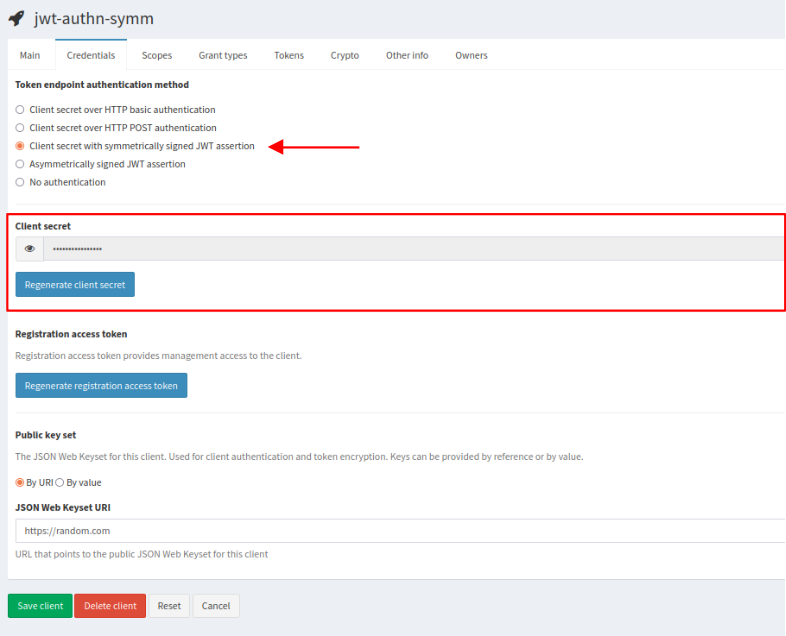
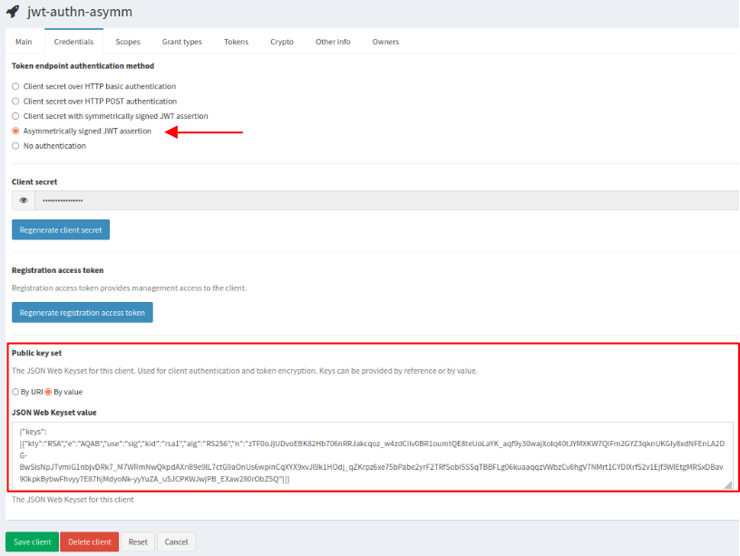

JWT client authentication
IAM supports several methods to authenticate an OAuth2 client to the token endpoint.
The authentication via JWT assertion is defined in RFC7523. It can be used to request an access token when a client wishes to utilize an existing trust relationship, expressed through the semantics of the JWT, without a direct user-approval step at the authorization server. Client authentication using a JWT is nothing more than an alternative way for a client to authenticate to the token endpoint and must be used in conjunction with some grant type to form a complete and meaningful protocol request, for instance the authorization code flow (when a user has to approve the client in order to access to their resources), the client credential flow (when a client is acting on its own behalf), etc.
JWT assertion validation
The IAM Authorization Server validates the JWT assertion and issues an access token if the following conditions are satisfied.
JWT assertion header
- the “alg” (algorithm) claim must be present to indicate the algorithm used to sign the token;
- the “kid” (key ID) claim must be present in the asymmetrically signed assertions to identify the public key.
JWT assertion body
- the “iss” (issuer) and “sub” (subject) claims must be equal to the
client_id; - the “aud” (audience) claim must be equal to the token endpoint URL;
- the “exp” (expiration) claim must be present to limit the JWT assertion lifetime;
- the “jti” (JWT ID) claim must be present and provides a unique identifier for the token.
Client settings
You need to configure an OAuth2 client in IAM which is used to issue a JWT assertion and get an access token.
Follow the instruction on how to register a new client, or edit an existing client (click on the My clients link on the left navigation bar of the IAM dashboard and select the client name). From the Credentials tab you can choose the authentication method to the token endpoint:
- client secret with symmetrically signed JWT assertion;
- asymmetrically signed JWT assertion.
Symmetrically signed JWT assertion
This authentication mechanism is used when your JWT assertion is signed with a symmetric key.
To use this mechanism, select Client secret with symmetrically signed JWT assertion; the Client secret generated by IAM must be used as symmetric key to sign your JWT assertion.

A symmetrically signed JWT assertion looks like
## Header
{
"alg": "HS256"
}
## Payload
{
"sub": "181f26f9-4562-4919-b718-759241485335",
"aud": "https://iam.local.io/token",
"nbf": 1649162752,
"iss": "181f26f9-4562-4919-b718-759241485335",
"exp": 1651754752,
"iat": 1649162752,
"jti": "120240aa-e389-4a55-8384-f4d7a54c2633"
}
Asymmetrically signed JWT assertion
This authentication mechanism is used when your JWT assertion is signed with a private key.
To use this mechanism, select Asymmetrically signed JWT assertion and then choose how IAM can get the public key used to validate your JWT assertion. Into the section Public key set below, choose between:
- By URI and provide a valid JSON Web Keyset URI in the corresponding box,
- or By value and provide a JSON Web Keyset value in the corresponding box.

An asymmetrically signed JWT assertion looks like
## Header
{
"alg": "RS256",
"kid": "rsa1"
}
## Payload
{
"sub": "bdb6ca15-be9c-470a-81dc-69d30dabb340",
"aud": "https://iam.local.io/token",
"nbf": 1649162752,
"iss": "bdb6ca15-be9c-470a-81dc-69d30dabb340",
"exp": 1651754752,
"iat": 1649162752,
"jti": "f4392c1e-6d6a-423e-8e5e-5d114585f750"
}
Getting an access token
Here is an example of an HTTP POST request to the token endpoint where the client is authenticated with JWT assertion and is authorized via the client credential OAuth2 flow.
$ curl -d client_assertion=${JWTA} -d client_assertion_type=urn:ietf:params:oauth:client-assertion-type:jwt-bearer -d grant_type=client_credentials https://iam.local.io/token | jq
{
"access_token": "eyJraWQiOiJyc2ExIiwiY...",
"token_type": "Bearer",
"expires_in": 3599,
"scope": "storage.read:/ storage.create:/ storage.modify:/"
}
If not explicitly requested in the payload, the scopes returned in the access token are all the ones registered for your client.